Gallery
Greenhaven's art is procedural - hand-authored sheets baked into JSON at build time and drawn at runtime. This page collects the stills and clips that show what the game, the tools and the brand actually look like.
Play in one clip
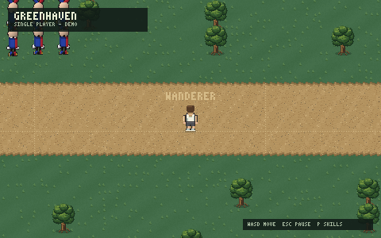
Brand
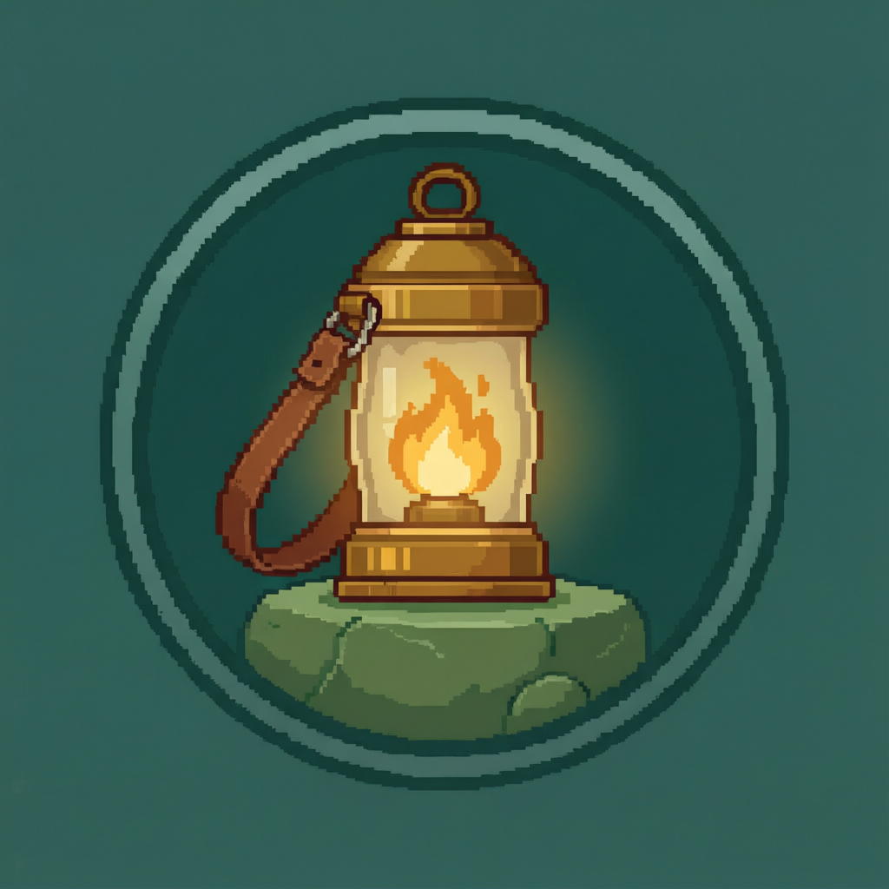
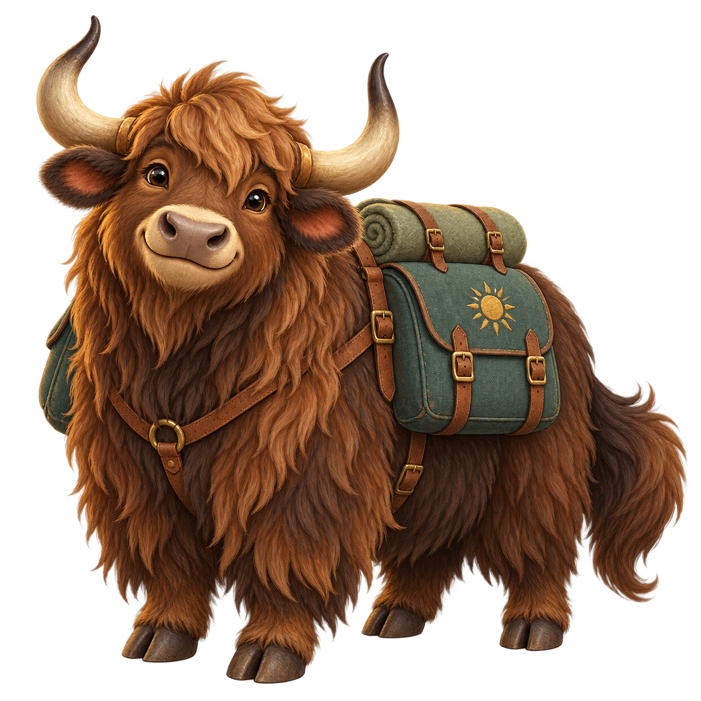
The menu backdrop
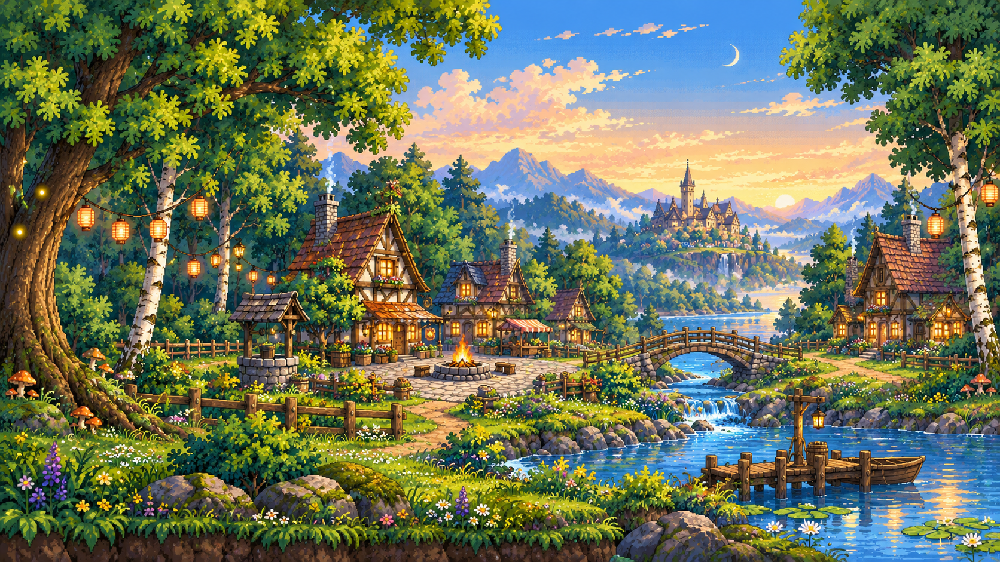
Character art
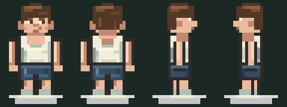
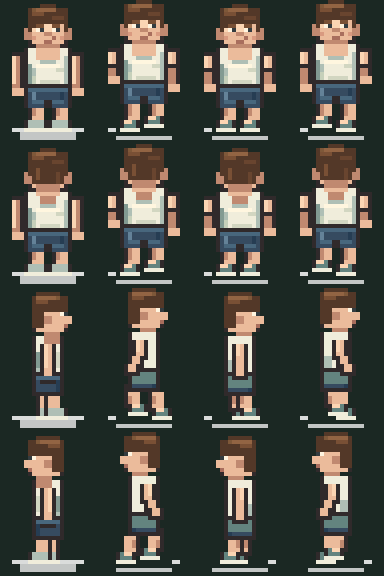
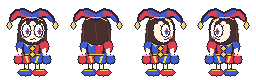
Tree sprite templates
Trees are generated at build time from a template and one authored palette. The three templates below stand behind every cuttable and scenery tree on the shipping map.
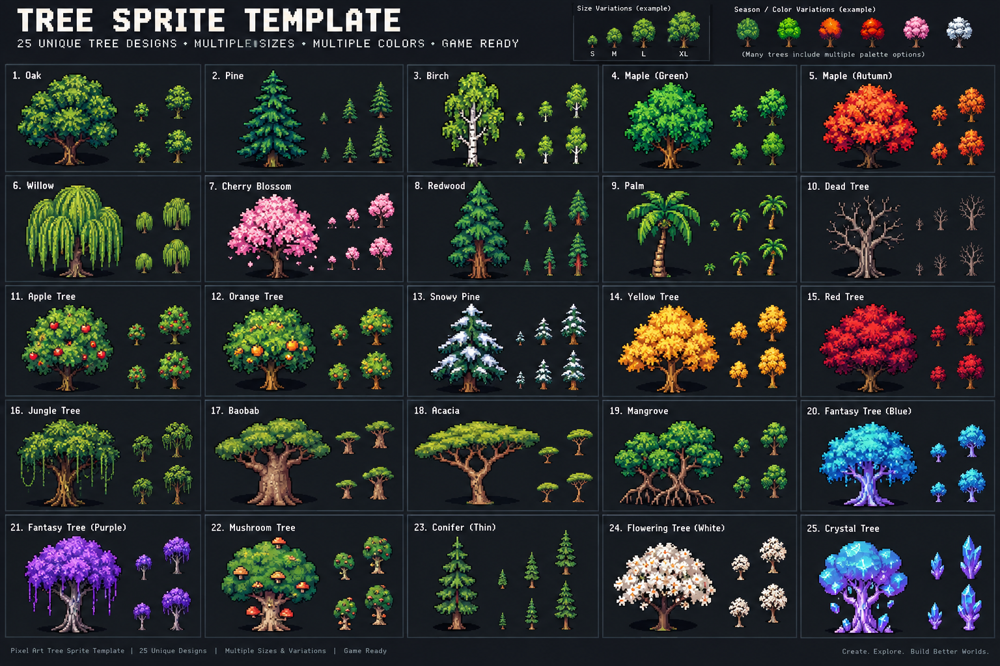
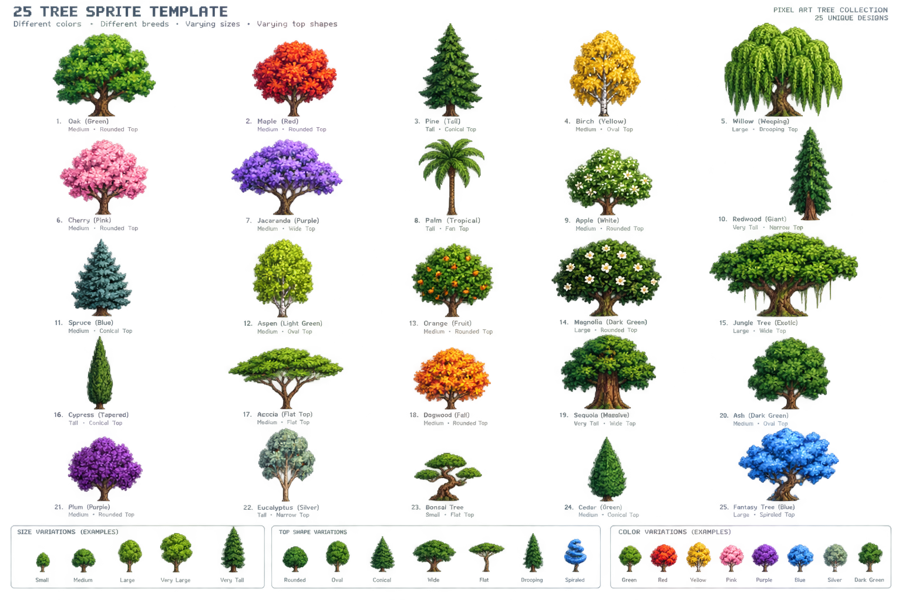

Cursor
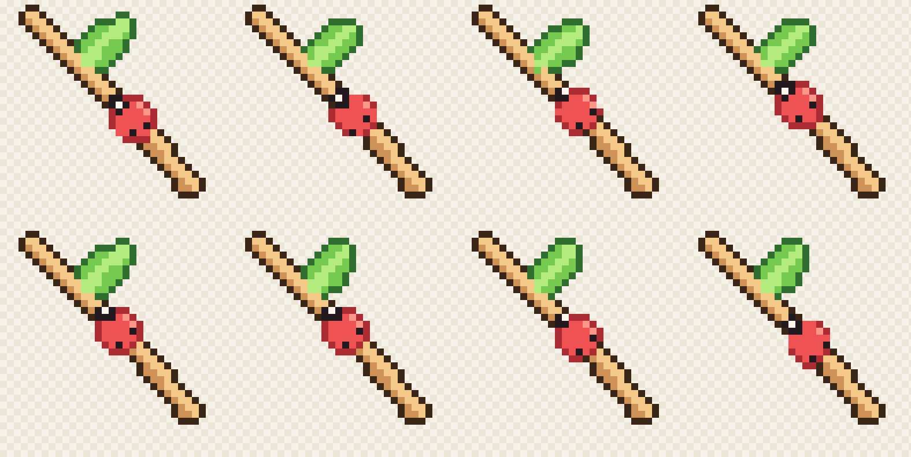
World concept maps
The map designers kept three reference layouts for the shipping world. They are pinned as design intent, not in-game art.
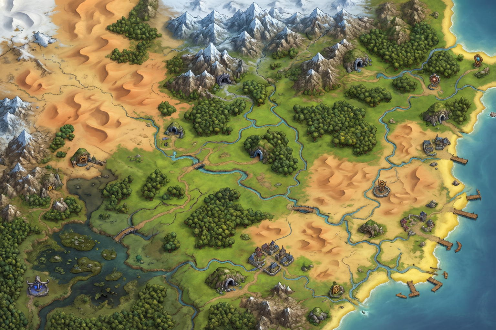
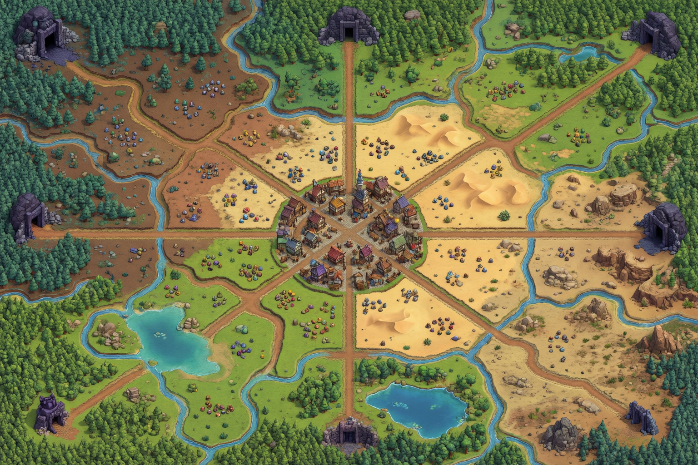
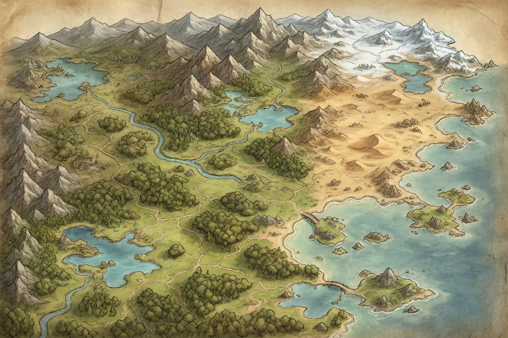
Where these come from
Every image on this page is bundled inside the wiki, at /assets/. Nothing here reaches off-site. The brand icon and the menu backdrop are the same files the game loads at boot; the character previews are the model-maker export for the player sheet; the tree templates and the cursor come from the sprite-sheet and cursor packs the client ships with.